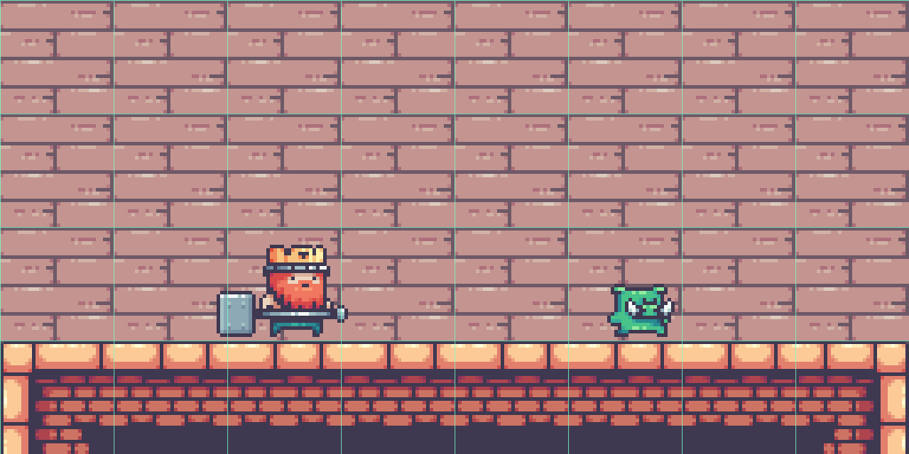
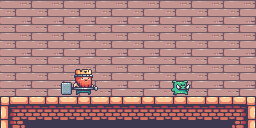
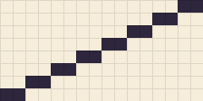
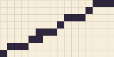
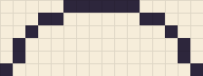
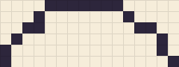
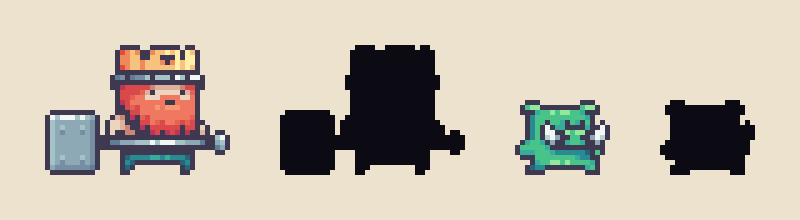
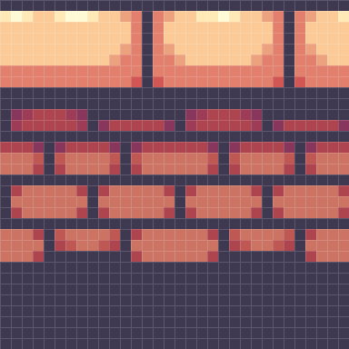
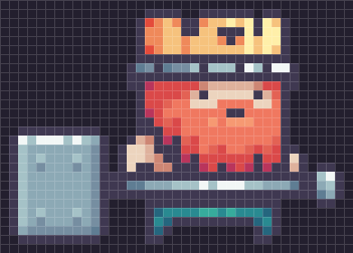

GameDev 2D · P1
GameDev 2D · P1
Grade e escala: o tamanho real do castelo
Objetivo: saber em que tamanho desenhar antes de abrir o programa.
Pixel art é desenho em grade: cada pixel é uma decisão. Por isso o tamanho vem antes de tudo. O jogo modelo roda numa tela de 480 × 270 pixels, ampliada para caber no monitor. Dentro dela:
| Peça | Tamanho no castelo | No seu jogo |
|---|---|---|
| Tile (bloco de cenário) | 32 × 32 px | 32 × 32 px — obrigatório, é a grade da fase |
| Rei (corpo, sem o martelo) | ≈ 24 × 28 px | Herói com 24 a 32 px de altura |
| Porco patrulheiro | ≈ 20 × 18 px | Inimigo comum menor que o herói |
| Tela inteira | 15 × 8,4 tiles | A mesma |

Em tamanho real (1×), essa cena é assim:

Aseprite essencial
Objetivo: deixar o Aseprite pronto para desenhar para o castelo.
- File → New: 64 × 64 px, Color Mode: RGBA, Background: Transparent. (Um tile cabe em 32 × 32; o personagem precisa de folga para o golpe.)
- View → Grid → Grid Settings: largura e altura 32. Ligue a grade com Ctrl+' ou pelo menu View.
- View → Preview (F7): uma janelinha que mostra o desenho em 1× enquanto você trabalha ampliado. Ela fica aberta o tempo todo.
| Ferramenta | Atalho | Para quê |
|---|---|---|
| Lápis (Pencil) | B | Desenhar pixel a pixel. Ligue Pixel-perfect na barra de opções: ele remove os “cotovelos” das linhas feitas à mão. |
| Borracha | E | Apagar para transparente. |
| Conta-gotas | Alt + clique | Pegar uma cor do desenho. |
| Balde | G | Preencher áreas fechadas. |
| Linha | Shift + clique com o lápis | Linha reta do último ponto até o clique. |
| Camadas | painel Layers | Contorno, cor e sombra em camadas separadas enquanto você aprende. |
Baixe o kit de estudo. No painel de paleta, abra o menu de opções e escolha Load Palette → paleta_castelo.gpl. A partir de agora você só usa essas cores.
Linha de um pixel e jaggies
Objetivo: desenhar retas e curvas que parecem lisas, mesmo feitas de quadrados.
Em pixel art toda linha inclinada é uma escada. O olho aceita a escada quando os degraus seguem um padrão; quando o padrão quebra, aparecem os jaggies — dentes que chamam atenção para o lugar errado.




Paleta limitada e rampas de cor
Objetivo: entender como poucas cores organizadas em rampas dão unidade ao jogo.
O castelo usa algumas dezenas de cores, mas quase tudo sai de poucas rampas: sequências da cor mais escura para a mais clara de um mesmo material. O número em cada amostra é o matiz (hue, de 0° a 360°).
Hue shifting: a sombra muda de cor
Olhe a rampa do porco: a sombra não é “verde mais escuro”. Ela gira para o azul (196°) e a luz gira para o amarelo-esverdeado (127°). O ouro faz o mesmo: sombra puxada para o vermelho, luz para o amarelo. Esse deslocamento de matiz é o hue shifting — é o que deixa a cor viva em vez de “suja”.
Em dupla, escolha uma rampa e responda: o que acontece com o matiz, a saturação e o brilho da sombra para a luz? Compare com a rampa do metal, que quase não muda de matiz. Por que o metal pode ser assim?
Silhueta: o personagem em preto
Objetivo: testar se um personagem se reconhece só pela forma.
No jogo, o jogador vê o personagem pequeno, em movimento e por meio segundo. Quem lê primeiro é a silhueta. O teste é simples: pinte tudo de uma cor só e veja se ainda dá para dizer quem é e para onde está virado.

- Um elemento grande e característico (o martelo, a coroa) vale mais que dez detalhes pequenos.
- Herói e inimigo precisam ter silhuetas diferentes entre si.
- A direção do olhar e da arma deve ser clara: o jogo espelha o sprite quando o personagem vira.
Cópia de estudo: o tile e o rei
Objetivo: treinar o método numa cópia de estudo e começar a arte do seu jogo — Atividade P1.1.
Copiar uma referência pixel a pixel, sabendo o porquê de cada pixel, é como os pintores aprendiam com os mestres. Você não vai entregar isso como arte sua: é exercício. Os arquivos estão no kit de estudo.

tile_chao_topo.png · 32 × 32 px · ampliado 12×
rei_idle_000.png · 39 × 28 px · ampliado 10×- Novo documento 32 × 32, paleta do castelo carregada.
- Abra a referência ao lado (File → Open, abas lado a lado) e desenhe primeiro o contorno das pedras, depois as cores chapadas, por último luz e sombra.
- Teste se o tile repete: copie-o 3 vezes lado a lado (ou ligue View → Tiled Mode → Tiled in X Axis). A emenda não pode aparecer.
- Novo documento 64 × 64. Camada contorno: desenhe a silhueta (coroa, barba, martelo, pés).
- Camada cor por baixo: preencha cada área com a cor média da rampa.
- Camada luz: de onde vem a luz no rei? Anote antes de pôr o primeiro pixel de brilho.
- Faça o teste de silhueta da Sala 05 na sua cópia.
- Abra o seu GDD da C1 na tabela “No castelo → No seu jogo”: quem é o herói, o inimigo comum, o inimigo de longe e o chefão do seu mundo?
- Monte a primeira versão da paleta do seu jogo em rampas (pode partir de uma paleta do Lospec) e salve como
paleta_meujogo.gpl. - Num documento 256 × 64, rascunhe em preto a silhueta dos quatro personagens lado a lado, no tamanho de jogo. Eles precisam ser diferentes só pela forma.
Exportar para a engine
Objetivo: salvar os arquivos no formato e com os nomes que o Godot e a trilha esperam.
| Regra | Como |
|---|---|
| Arquivo de trabalho | File → Save em .aseprite: guarda camadas, paleta e grade. |
| Arquivo para o jogo | File → Export As em .png, Resize 100% (1×), fundo transparente. |
| Arquivo para mostrar | Outra exportação com Resize 400% ou 800%. Nunca use essa no jogo. |
| Nome | tipo_nome_estado_quadro.png, minúsculas, sem acento e sem espaço. |
| Exemplos do padrão da trilha |
|---|
heroi_gata_idle_000.png · inimigo_rato_idle_000.png · tile_chao_topo.png · objeto_bau_fechado.png |
estudo_tile_chao.pngeestudo_rei_idle.pngem 1×, fundo transparente.- Os dois
.asepritecom camadas. - Uma imagem 4× de cada, lado a lado com a referência.
paleta_meujogo.gple a imagem com as silhuetas do seu elenco.
Onde estamos na trilha
 C1GDD ✓P1Pixel art ◂ vocêP2AnimaçãoP3FaseC2EngineC3MecânicasC4ÁudioC5Publicação
C1GDD ✓P1Pixel art ◂ vocêP2AnimaçãoP3FaseC2EngineC3MecânicasC4ÁudioC5PublicaçãoO herói, o inimigo e as peças que você desenha nesta semana são animados na P2 e montados em fase na P3. Tudo nasce aqui: mesma grade, mesma paleta.